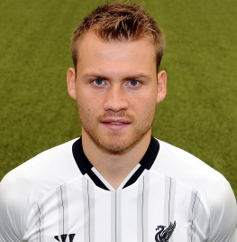 Simon Mignolet has had a roller coaster of a season. He concede goals a grandmother could save. This has been Mignolet though. He was took out of the squad against Man United and since returning he has been terrific. At January,his form changed and he went on a club record breaking 6 clean sheets away from home. Mignolet currently stands at 14 clean sheets and looks set to win the golden glove. He was named Liverpool Player Of The Season by club officals.
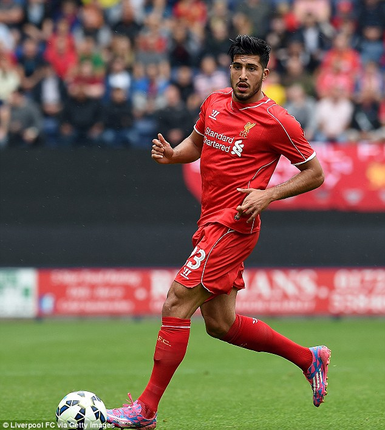 Emre Can has been an excellent addition to this Liverpool squad. He signed from Leverkusen and took time before becoming a crucial first team player. He is the most versitle player in the team. He plays anywhere in defence and midfield. This debut season has been a great start for despite the poor performance of the team.
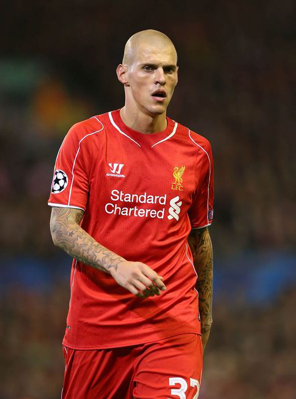 Skrtel will be the longest serving troop for Liverpool next season. He has shown a great amount of leadership this season. In his new sweeper role at the back, he really began to regain form. This season he countinued to save Liverpool, especially against Arsenal. He has been tidy and a brick wall in defence.
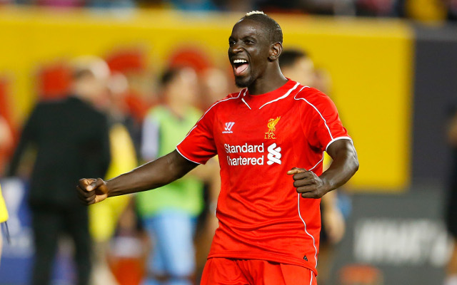 Sakho has got a lot of stick of fans for being sloppy in recent times. However, this season he has turned his form around. He has earned his place into the Liverpool squad with strong performances against the likes of Swansea and West Ham.
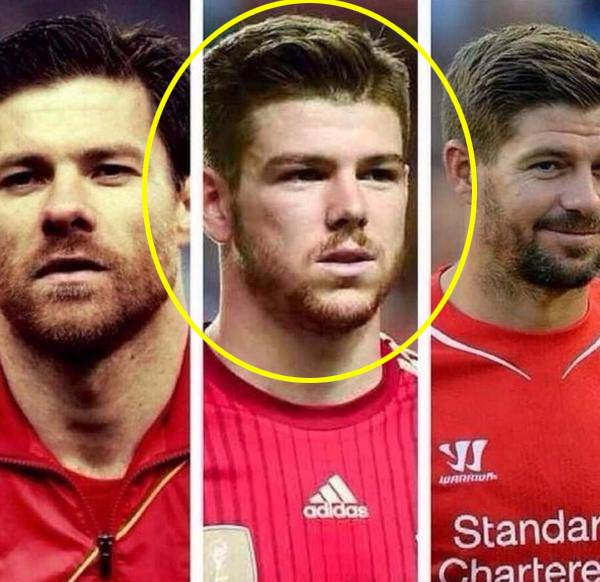
The hobbit of the team Alberto Moreno has been a bit of a dark horse this season. After winning the Europa League with Sevilla last season, Alberto had too make an impact and with his incredible solo goal against Tottenham he showed he deserves to be at Liverpool. He hasn't had a great season but he had a good one.
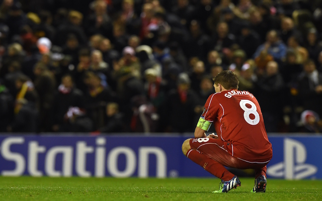 What can you say about this man? He has been the main man for the squad for years. He has been the pride and joy of this squad. It's devestating that his Liverpool career is over. The man at the age of 34, has had his fair share of critics, however he has shut them up constantly. He had a roundabout of a season, getting sent of against Manchester United yet scoring against Everton in superb fashion, he'll go down in history as the best Liverpool player in the modern era. Wirhout a shadow of a doubt he helped Liverpool this season in crucial games, however they couldn't capitalize on big chances. 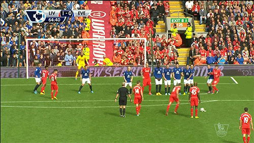
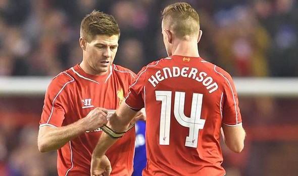 If you want to talk about underrated, this man will always pop up. Jordan Henderson has shown he's as passionate about Liverpool then most. He nowadays is a veteran in this squad. He has been the man to step up for Gerrard this season. He has grabbed some important goals for Liverpool this season, showing signs of Gerrard in him. He gives Liverpool signs they will be fine without Gerrard. Jordan with 7 goals and 12 assists proves this season is his best yet!
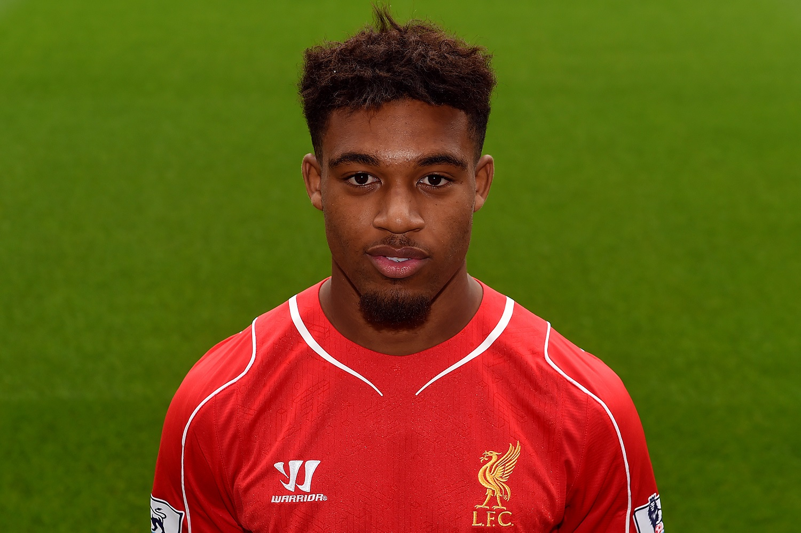 This will come controversial as that I didn't pick Sturridge. The reason I choose Ibe is he had a great loan spell at Derby and immediately made an impact returning to Liverpool. He put in excellent performances against Everton and Besiktas. Jordon shined this season and many of us can't wait to see what happens with him next season.
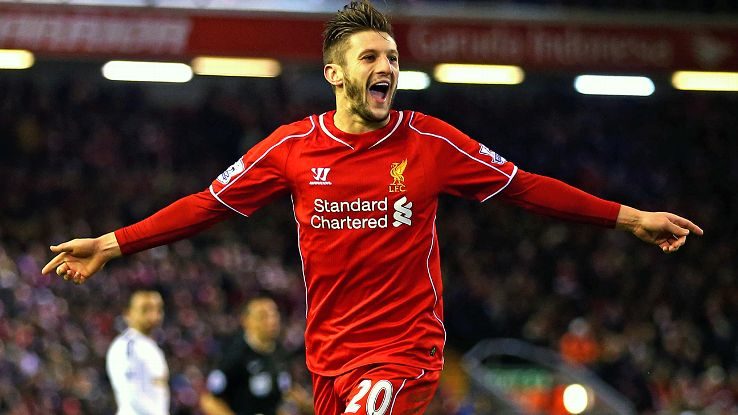 Adam will be the first to admit he has had a bad season. He hasn't shown his ruthless side against teams this season. He had a injury crisis of a season. That said he has shown he can play in this Liverpool style. He may not of been the best player, however he has shown he can be a great player and I look forward to his growth next season.
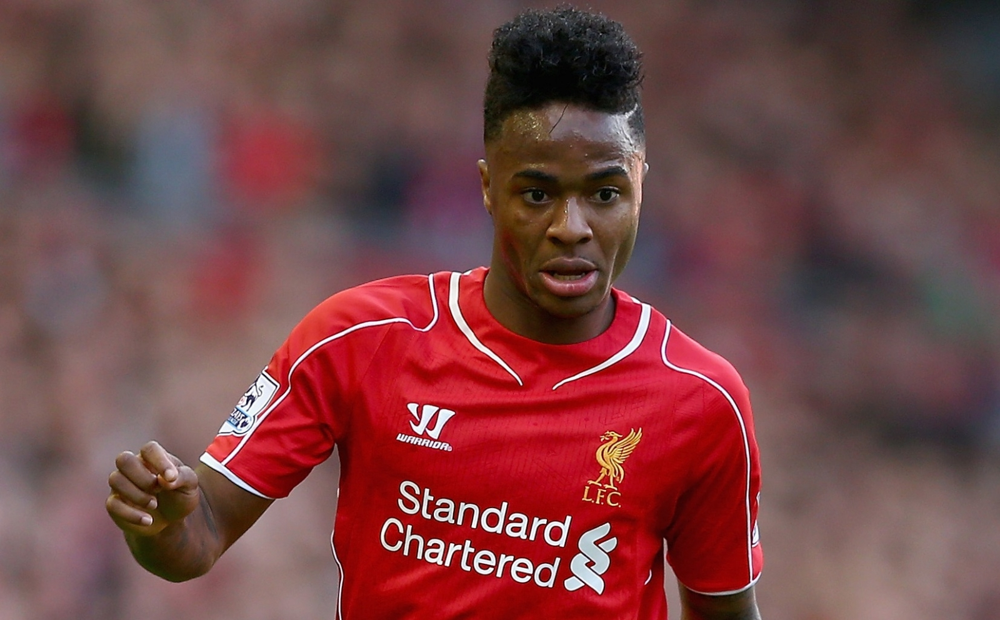
Raheem played everywhere up front this season. He filled in for the injured Sturridge. He has shown his talent this season with well earned goals. He has been Liverpool's best young talent whether or not that's the case next season, time will tell.